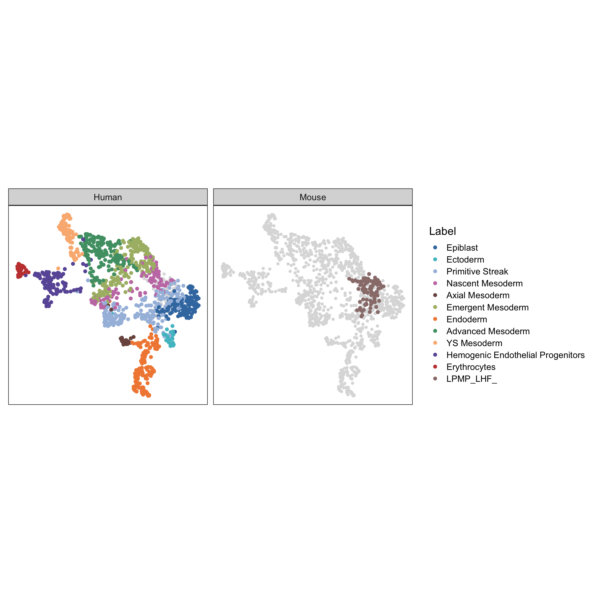

Last updated: 2021-08-01
Checks: 7 0
Knit directory: LPMP_LHF_C/
This reproducible R Markdown analysis was created with workflowr (version 1.6.2). The Checks tab describes the reproducibility checks that were applied when the results were created. The Past versions tab lists the development history.
Great! Since the R Markdown file has been committed to the Git repository, you know the exact version of the code that produced these results.
Great job! The global environment was empty. Objects defined in the global environment can affect the analysis in your R Markdown file in unknown ways. For reproduciblity it’s best to always run the code in an empty environment.
The command set.seed(52694887) was run prior to running the code in the R Markdown file. Setting a seed ensures that any results that rely on randomness, e.g. subsampling or permutations, are reproducible.
Great job! Recording the operating system, R version, and package versions is critical for reproducibility.
Nice! There were no cached chunks for this analysis, so you can be confident that you successfully produced the results during this run.
Great job! Using relative paths to the files within your workflowr project makes it easier to run your code on other machines.
Great! You are using Git for version control. Tracking code development and connecting the code version to the results is critical for reproducibility.
The results in this page were generated with repository version bd76604. See the Past versions tab to see a history of the changes made to the R Markdown and HTML files.
Note that you need to be careful to ensure that all relevant files for the analysis have been committed to Git prior to generating the results (you can use wflow_publish or wflow_git_commit). workflowr only checks the R Markdown file, but you know if there are other scripts or data files that it depends on. Below is the status of the Git repository when the results were generated:
Ignored files:
Ignored: .DS_Store
Ignored: .Rhistory
Ignored: .Rproj.user/
Ignored: analysis/.Rhistory
Ignored: analysis/cache/
Ignored: output/backup/
Ignored: renv/.gitignore
Ignored: renv/library/
Ignored: renv/settings.dcf
Ignored: renv/staging/
Ignored: resources/
Ignored: shiny/
Ignored: slides/
Untracked files:
Untracked: analysis/backup/cell-signalling.Rmd
Untracked: analysis/backup/figure-01.Rmd
Untracked: analysis/backup/lineage-markers.Rmd
Untracked: analysis/backup/scenic-analysis.Rmd
Untracked: analysis/backup/secondary-exploration.Rmd
Unstaged changes:
Modified: _workflowr.R
Deleted: analysis/10-atlas-integration.Rmd
Modified: analysis/_site.yml
Deleted: analysis/cell-signalling.Rmd
Deleted: analysis/figure-01.Rmd
Deleted: analysis/lineage-markers.Rmd
Deleted: analysis/scenic-analysis.Rmd
Deleted: analysis/secondary-analysis.Rmd
Deleted: analysis/secondary-exploration.Rmd
Deleted: analysis/secondary-signalling.Rmd
Modified: renv.lock
Modified: renv/activate.R
Note that any generated files, e.g. HTML, png, CSS, etc., are not included in this status report because it is ok for generated content to have uncommitted changes.
These are the previous versions of the repository in which changes were made to the R Markdown (analysis/human-integration.Rmd) and HTML (docs/human-integration.html) files. If you’ve configured a remote Git repository (see ?wflow_git_remote), click on the hyperlinks in the table below to view the files as they were in that past version.
| File | Version | Author | Date | Message |
|---|---|---|---|---|
| html | bd76604 | James Ashmore | 2021-08-01 | Build |
| Rmd | d5992fc | James Ashmore | 2021-08-01 | Build |
| html | 783fd48 | James Ashmore | 2021-05-04 | Build |
| Rmd | e9c9b15 | James Ashmore | 2021-05-04 | Build |
| html | 1a49e2b | James Ashmore | 2021-05-04 | Build |
| Rmd | 414e7bb | James Ashmore | 2021-05-04 | Build |
| html | 2577d3f | James Ashmore | 2021-04-30 | Build |
| Rmd | db83812 | James Ashmore | 2021-04-30 | Build |
| html | 96255f4 | James Ashmore | 2021-04-30 | Build |
| Rmd | c10f6f9 | James Ashmore | 2021-04-30 | Build |
Setup chunk options:
knitr::opts_chunk$set(
autodep = TRUE,
cache = TRUE,
cache.lazy = FALSE,
cache.path = "cache/human-integration.Rmd/",
dev = "png",
error = FALSE,
message = FALSE,
warning = FALSE,
fig.align = "center",
out.width = '100%'
)Load Bioconductor packages:
library(batchelor)
library(scater)
library(scran)
library(scuttle)Load CRAN packages:
library(ggforce)
library(ggrepel)
library(hues)
library(pheatmap)Read mouse experiment object:
sce <- readRDS("output/09-cell-annotation.rds")Define function to clean mouse experiment object:
cleanSCE <- function(x, sample = NA) {
# Clear metadata
metadata(x) <- list()
# Remove NA
x <- x[!is.na(rowData(x)$gene_id), ]
# Replace rownames
rownames(x) <- rowData(x)$gene_id
# Clear rowData
rowData(x) <- NULL
# Replace rowRanges
rowRanges(x) <- relist(GRanges(), PartitioningByEnd(integer(length(x)), names = rownames(x)))
# Clear colnames
colnames(x) <- NULL
# Replace colData
colData(x) <- DataFrame(
Sample = sample,
Cluster = paste(sample, x$cluster, sep = "_"),
Label = paste(sample, x$label, sep = "_"),
Origin = NA,
sizeFactor = sizeFactors(x)
)
# Clear reducedDims
reducedDims(x) <- NULL
# Clear altExp
altExp(x) <- NULL
# Return object
return(x)
}Clean mouse experiment objects:
sce <- cleanSCE(x = sce, sample = "LPMP_LHF")Read human embryo experiment object:
ref <- readRDS("data/HumanGastrulationData.rds")Define function to clean human experiment object:
cleanSCE <- function(x, sample = NA) {
# Clear metadata
metadata(x) <- list()
# Remove NA
x <- x[!is.na(rowData(x)$ID), ]
# Replace rownames
rownames(x) <- rowData(x)$ID
# Clear rowData
rowData(x) <- NULL
# Replace rowRanges
rowRanges(x) <- relist(GRanges(), PartitioningByEnd(integer(length(x)), names = rownames(x)))
# Clear colnames
colnames(x) <- NULL
# Replace colData
colData(x) <- DataFrame(
Sample = sample,
Cluster = x$Cluster,
Label = x$Cluster,
Origin = x$Origin,
sizeFactor = sizeFactors(x)
)
# Clear reducedDims
reducedDims(x) <- NULL
# Clear altExp
altExp(x) <- NULL
# Return object
return(x)
}Clean human experiment object:
ref <- cleanSCE(ref, sample = "Human")Read orthologous gene mapping table:
tbl <- read.csv("data/hsapiens_mmusculus.csv")
tbl <- subset(tbl, mmusculus_homology_type == "ortholog_one2one")Subset mapping table to measured genes:
tbl <- subset(tbl, mmusculus_gene_id %in% rownames(sce))
tbl <- subset(tbl, hsapiens_gene_id %in% rownames(ref))Subset experiment objects to common genes:
sce <- sce[tbl$mmusculus_gene_id, ]
ref <- ref[tbl$hsapiens_gene_id, ]Replace mouse rowData slot with gene mapping table:
df <- DataFrame(
Human_ID = tbl$hsapiens_gene_id,
Human_Symbol = tbl$hsapiens_gene_name,
Mouse_ID = tbl$mmusculus_gene_id,
Mouse_Symbol = tbl$mmusculus_gene_name,
row.names = tbl$mmusculus_gene_id
)
df <- df[rownames(sce), ]
rowData(sce) <- df
rownames(sce) <- rowData(sce)$Human_IDReplace human rowData slot with gene mapping table:
df <- DataFrame(
Human_ID = tbl$hsapiens_gene_id,
Human_Symbol = tbl$hsapiens_gene_name,
Mouse_ID = tbl$mmusculus_gene_id,
Mouse_Symbol = tbl$mmusculus_gene_name,
row.names = tbl$hsapiens_gene_id
)
df <- df[rownames(ref), ]
rowData(ref) <- df
rownames(ref) <- rowData(ref)$Human_IDCreate list of all experiment data:
all <- c("Human" = ref, "Mouse" = sce)Model the per-gene variance:
dec <- lapply(all, modelGeneVar)Combine variance decompositions:
dec <- do.call(combineVar, dec)Identify highly variable genes:
hvg <- getTopHVGs(dec, var.field = "bio", var.threshold = 0)Perform scaling normalization:
all <- multiBatchNorm(all)Correct experiments using nearest neighbours:
set.seed(1111001110)
mnn <- correctExperiments(
all,
subset.row = hvg,
correct.all = TRUE,
PARAM = FastMnnParam(merge.order = c("Human", "Mouse"))
)Store combined variance model:
metadata(mnn)$combineVar <- decStore highly variable genes:
metadata(mnn)$getTopHVGs <- hvgCheck proportion of lost variance:
var <- metadata(mnn)$merge.info$lost.var
col <- colorRampPalette(RColorBrewer::brewer.pal(n = 5, name = "Reds"))(100)
brk <- seq(0, max(var), length.out = 101)
pheatmap(var, color = col, display_numbers = TRUE, number_format = "%.2f", cluster_cols = FALSE, cluster_rows = FALSE, angle_col = 0)
Cluster on the corrected PCA to obtain a partitioning of the cells:
snn <- buildSNNGraph(mnn, type = "jaccard", use.dimred = "corrected")
com <- igraph::cluster_louvain(snn)Tabulate number of cells from multiple batches within each cluster:
tab <- table(Cluster = com$membership, Batch = mnn$batch)
col <- colorRampPalette(RColorBrewer::brewer.pal(n = 5, name = "Blues"))(100)
brk <- seq(0, max(tab), length.out = 101)
pheatmap(tab, color = col, display_numbers = TRUE, number_format = "%d", cluster_cols = FALSE, cluster_rows = FALSE, angle_col = 0)
Perform UMAP on the corrected PCA matrix:
set.seed(1100111110)
mnn <- runUMAP(mnn, dimred = "corrected", n_neighbors = 15, min_dist = 0.5) # same settings as reference analysisPlot UMAP coloured by cluster annotation:
dat <- makePerCellDF(mnn, use.coldata = TRUE, use.dimred = "UMAP")
HumanClusterColours <- c(
"Epiblast" = "#3D7AB0",
"Ectoderm" = "#4FC0CB",
"Primitive Streak" = "#A6BEDF",
"Nascent Mesoderm" = "#C67DB4",
"Axial Mesoderm" = "#7B534D",
"Emergent Mesoderm" = "#ABB973",
"Endoderm" = "#F28941",
"Advanced Mesoderm" = "#4F9E74",
"YS Mesoderm" = "#FAB781",
"Hemogenic Endothelial Progenitors" = "#6A59A6",
"Erythrocytes" = "#C5433E"
)
MouseClusterColours <- iwanthue(length(unique(sce$Cluster)))
names(MouseClusterColours) <- unique(sce$Cluster)
ClusterColours <- c(HumanClusterColours, MouseClusterColours)
ggplot(dat, aes(UMAP.1, UMAP.2, colour = Cluster)) +
geom_point(data = dat[, c("UMAP.1", "UMAP.2")], colour = "gainsboro") +
geom_point(size = 2) +
scale_colour_manual(values = ClusterColours, na.value = "#000000") +
labs(x = "UMAP 1", y = "UMAP 2") +
facet_wrap(~ batch) +
theme_no_axes(base.theme = theme_bw(base_size = 16)) +
theme(aspect.ratio = 1)
Plot UMAP coloured by label annotation:
dat <- makePerCellDF(mnn, use.coldata = TRUE, use.dimred = "UMAP")
HumanLabelColours <- c(
"Epiblast" = "#3D7AB0",
"Ectoderm" = "#4FC0CB",
"Primitive Streak" = "#A6BEDF",
"Nascent Mesoderm" = "#C67DB4",
"Axial Mesoderm" = "#7B534D",
"Emergent Mesoderm" = "#ABB973",
"Endoderm" = "#F28941",
"Advanced Mesoderm" = "#4F9E74",
"YS Mesoderm" = "#FAB781",
"Hemogenic Endothelial Progenitors" = "#6A59A6",
"Erythrocytes" = "#C5433E"
)
MouseLabelColours <- iwanthue(length(unique(sce$Label)))
names(MouseLabelColours) <- unique(sce$Label)
LabelColours <- c(HumanLabelColours, MouseLabelColours)
ggplot(dat, aes(UMAP.1, UMAP.2, colour = Label)) +
geom_point(data = dat[, c("UMAP.1", "UMAP.2")], colour = "gainsboro") +
geom_point(size = 2) +
scale_colour_manual(values = LabelColours, na.value = "#000000") +
labs(x = "UMAP 1", y = "UMAP 2") +
facet_wrap(~ batch) +
theme_no_axes(base.theme = theme_bw(base_size = 16)) +
theme(aspect.ratio = 1)
Save integrated experiment object to disk:
saveRDS(mnn, file = "output/human-integration.rds")Print session information:
sessionInfo()R version 4.0.2 (2020-06-22)
Platform: x86_64-apple-darwin17.0 (64-bit)
Running under: macOS Catalina 10.15.7
Matrix products: default
BLAS: /Library/Frameworks/R.framework/Versions/4.0/Resources/lib/libRblas.dylib
LAPACK: /Library/Frameworks/R.framework/Versions/4.0/Resources/lib/libRlapack.dylib
locale:
[1] en_GB.UTF-8/en_GB.UTF-8/en_GB.UTF-8/C/en_GB.UTF-8/en_GB.UTF-8
attached base packages:
[1] parallel stats4 stats graphics grDevices datasets utils
[8] methods base
other attached packages:
[1] pheatmap_1.0.12 hues_0.2.0
[3] ggrepel_0.9.1 ggforce_0.3.3
[5] scuttle_1.0.4 scran_1.18.7
[7] scater_1.18.6 ggplot2_3.3.4
[9] batchelor_1.6.3 SingleCellExperiment_1.12.0
[11] SummarizedExperiment_1.20.0 Biobase_2.50.0
[13] GenomicRanges_1.42.0 GenomeInfoDb_1.26.7
[15] IRanges_2.24.1 S4Vectors_0.28.1
[17] BiocGenerics_0.36.1 MatrixGenerics_1.2.1
[19] matrixStats_0.59.0 workflowr_1.6.2
loaded via a namespace (and not attached):
[1] bitops_1.0-7 fs_1.5.0
[3] RColorBrewer_1.1-2 rprojroot_2.0.2
[5] tools_4.0.2 bslib_0.2.5.1
[7] utf8_1.2.1 R6_2.5.0
[9] irlba_2.3.3 ResidualMatrix_1.0.0
[11] vipor_0.4.5 uwot_0.1.10
[13] DBI_1.1.1 colorspace_2.0-1
[15] withr_2.4.2 tidyselect_1.1.1
[17] gridExtra_2.3 compiler_4.0.2
[19] git2r_0.28.0 BiocNeighbors_1.8.2
[21] DelayedArray_0.16.3 labeling_0.4.2
[23] sass_0.4.0 scales_1.1.1
[25] stringr_1.4.0 digest_0.6.27
[27] rmarkdown_2.9 XVector_0.30.0
[29] pkgconfig_2.0.3 htmltools_0.5.1.1
[31] sparseMatrixStats_1.2.1 highr_0.9
[33] limma_3.46.0 rlang_0.4.11
[35] FNN_1.1.3 DelayedMatrixStats_1.12.3
[37] farver_2.1.0 jquerylib_0.1.4
[39] generics_0.1.0 jsonlite_1.7.2
[41] BiocParallel_1.24.1 dplyr_1.0.7
[43] RCurl_1.98-1.3 magrittr_2.0.1
[45] BiocSingular_1.6.0 GenomeInfoDbData_1.2.4
[47] Matrix_1.3-4 Rcpp_1.0.6
[49] ggbeeswarm_0.6.0 munsell_0.5.0
[51] fansi_0.5.0 viridis_0.6.1
[53] lifecycle_1.0.0 stringi_1.6.2
[55] whisker_0.4 yaml_2.2.1
[57] edgeR_3.32.1 MASS_7.3-54
[59] zlibbioc_1.36.0 grid_4.0.2
[61] promises_1.2.0.1 dqrng_0.3.0
[63] crayon_1.4.1 lattice_0.20-44
[65] beachmat_2.6.4 locfit_1.5-9.4
[67] knitr_1.33 pillar_1.6.1
[69] igraph_1.2.6 codetools_0.2-18
[71] glue_1.4.2 evaluate_0.14
[73] renv_0.13.2 tweenr_1.0.2
[75] vctrs_0.3.8 httpuv_1.6.1
[77] polyclip_1.10-0 gtable_0.3.0
[79] purrr_0.3.4 assertthat_0.2.1
[81] xfun_0.24 rsvd_1.0.5
[83] RSpectra_0.16-0 later_1.2.0
[85] viridisLite_0.4.0 tibble_3.1.2
[87] beeswarm_0.4.0 statmod_1.4.36
[89] bluster_1.0.0 ellipsis_0.3.2